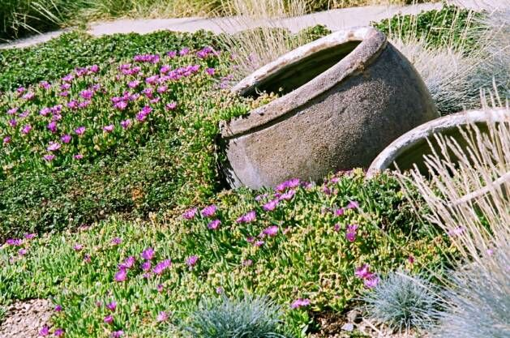
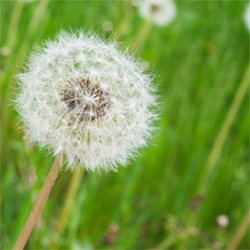

Environmental Impact
There are two related aspects of traditional lawn maintenance that impact the environment negatively. They are a) fertilizers and b) pesticides. The traditional fertilizers contain a combination of Nitrogen-Phosphate-Potassium to make the grass grow faster and the lawn to look greener. Unfortunately however, these chemicals have a significant negative impact on our environment. These chemicals are designed to make green things grow, they reach out to water systems such as lakes and rivers and become detrimental to our water system. An excess of these nutrients in water can create a rapid increase in the growth of phytoplankton, known as algae. During the night time the algae deplete the water of available oxygen. When these blooms die off, more oxygen is used during the decomposition of the dead algal cells. This process leads to what are called “dead zones”, areas of water where there is little to no life due to a lack of available oxygen in the water. This causes the death of livings things such as fish and other aquatic life. They lack of oxygen can also cause problems in reproduction of animals in water. The largest of these dead zones is in the Gulf of Mexico.
The second problem is the use of pesticides that are used as “weed control”. These are “man-made” chemicals that are meant to “kill” some plants. However, continued use and accumulation of chemicals
At some point, we all must ask the question - Is my lawn more important than my water? The answer should be no. The Geist GreenScape feels that continued use of (N-P-K) and chemicals is irresponsible when there is an equally effective organic option is available. But with our product you no longer have to sacrifice one for the other. Our products are made from natural products and are gentler on the environment, will not contaminate the water or cause problems to pets and